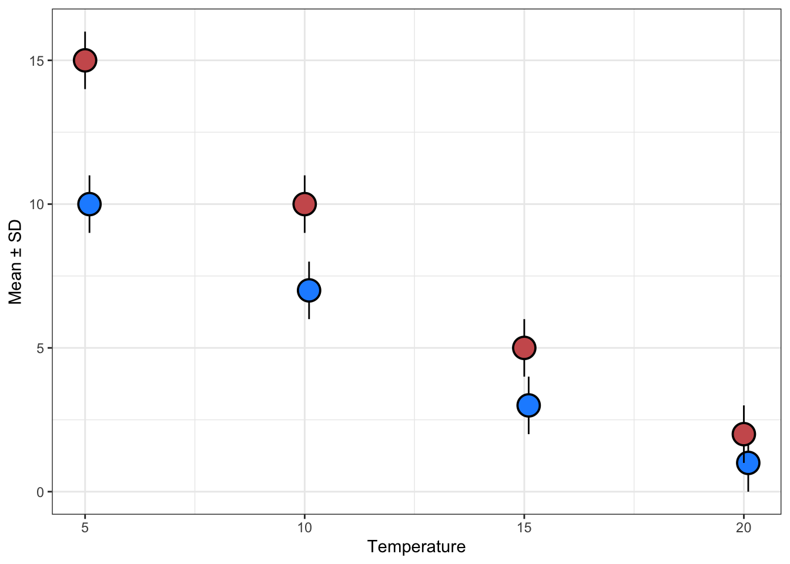
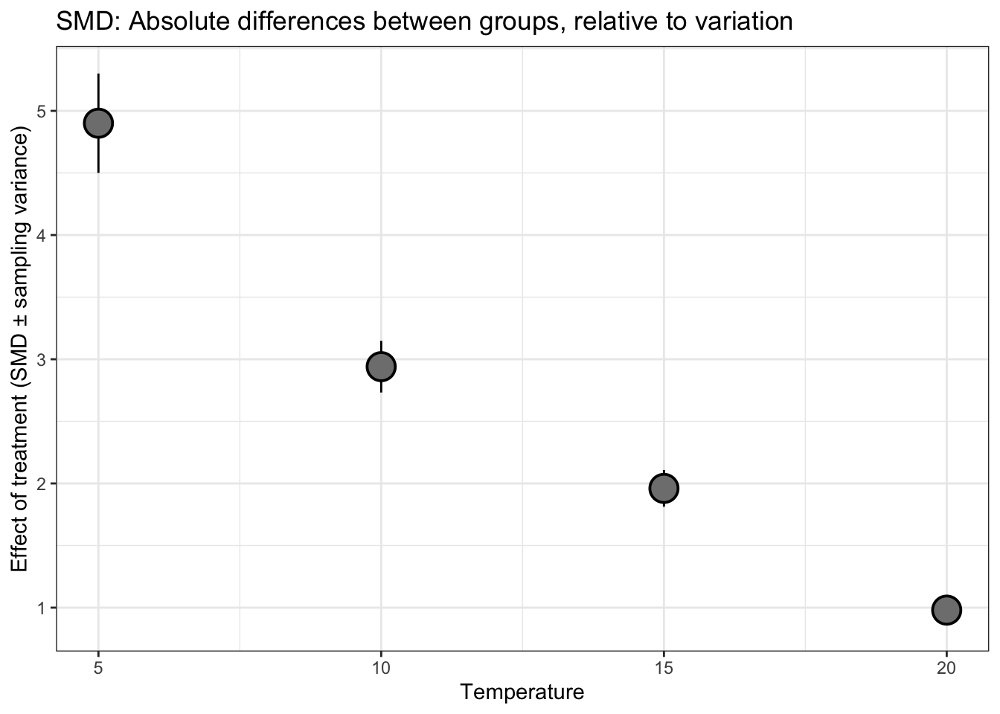
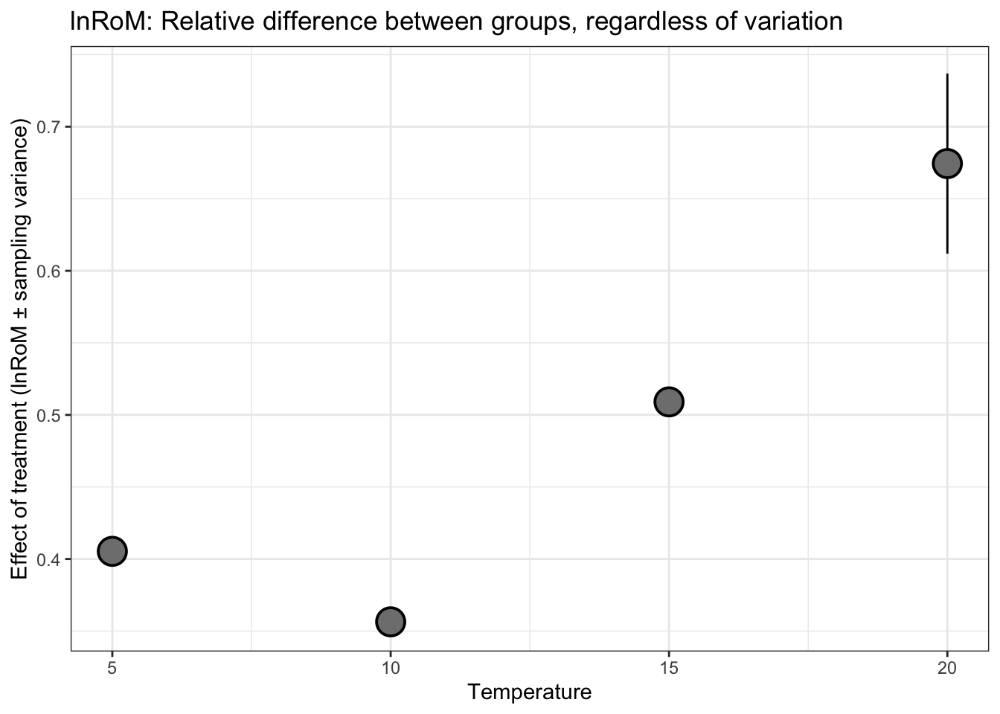
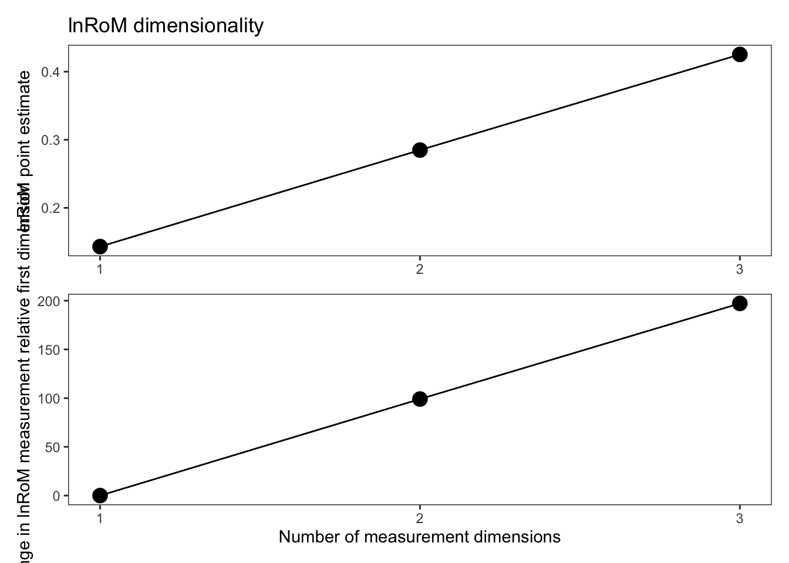
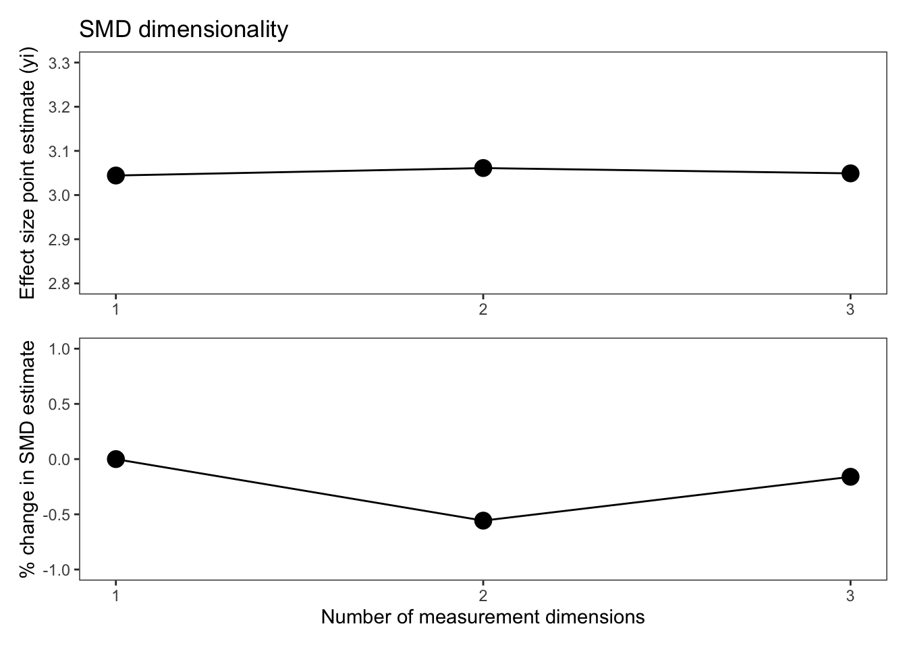
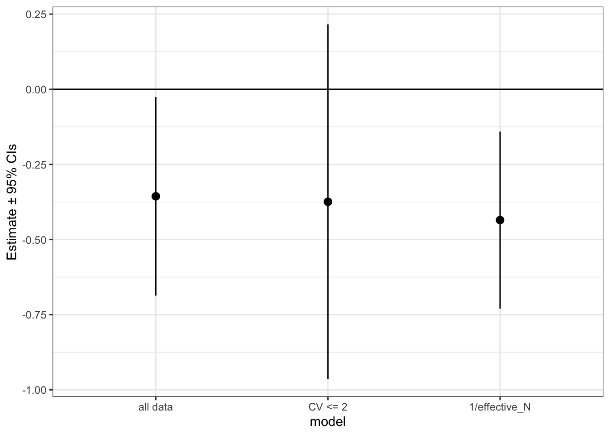

Standardized mean differences, log ratios of means, and related biological questions
Published
October 1, 2026
This class of effect sizes is among the most commonly used in ecology and evolution. These effect sizes compare a continuous response between two groups. For example:
Do animals exposed to a treatment weigh more than control animals?
Does warming change plant biomass?
Do pesticides reduce the abundance of non-target insects?
Are prey less abundant where predators are present?
Studies like these often report the same basic information: a mean, standard deviation, and sample size for each group. However, the same data can answer several different biological questions.
Before choosing an effect size, think carefully about the estimand you are interested in:
Biological question
Effect size estimand
What is the absolute difference between groups, relative to variation?
Standardized Mean Difference (SMD)
What is the relative difference between groups, regardless of variation?
Log-transformed ratio of means (lnRoM)
Are you only interested in the magnitude of difference, regardless of direction?
log-magnitude (lnM)
Which group is more variable than the other?
log variability ratio or coefficient of variation (lnVR, lnCVR)
In this chapter, we focus on SMD and lnRoM effect size estimands. These are essential effect sizes for comparing the mean responses of continuous variables between two groups. We dedicate this chapter to understanding the mathematical operation of these effect sizes, their assumptions, and how to interpret them.
In addition to SMD and lnRoM, comparisons of continuous responses between two groups can often be complimented by analyses of different effect sizes, which capture more than just mean differences. lnM describes the magnitude of differences between two groups, regardless of direction, while lnVR/lnCVR describe differences in variability between two groups. These require the same statistical ingredients as SMD and lnRoM. We discuss lnM here and lnCVR/lnVR here
Choosing between SMD and lnRoM is not trivial. The appropriate choice depends on the biological question you are interested in quantifying (i.e., the estimand) as well as whether the data meet the assumptions of the effect size.
ImportantNomenclature of lnRoM and lnRR
The log-transformed ratio of means (lnRoM) is often referred to as the log response ratio and is often abbreviated with lnRR.
However, lnRR also refers to the log risk ratio (lnRR), which compares the risks of binary events such as survival, infection, or fledging. We discuss lnRR in the chapter on binary outcomes.
Throughout this tutorial, we use lnRoM for the log ratio of means and reserve lnRR for the log risk ratio.
Statistical ingredients
These effect sizes describe continuous responses between two groups. To calculate these effect sizes, you will need three statistical ingredients:
means of each group (\(m_1\), \(m_2\))
standard deviation of each group (\(sd_1\), \(sd_2\))
sample sizes (\(n_1\), \(n_2\))
The subscript numbers correspond to the treatment and control groups. These are generally specified as:
group 1: treatment
group 2: control
As such, for both lnRoM and SMD, a negative effect size point estimate indicates that the treatment reduced the mean of the response variable while a positive effect size indicates that the treatment increased the response variable mean.
WarningMeasurements of error/variance
The effect sizes in this section require standard deviation (\(sd\)) for the treatment and control groups. \(sd\) is fundamentally distinct from standard error (\(se\)). Some meta-analyses have mistaken the two, with egregious results. Be sure to convert all measurements of error to \(sd\). Other commonly reported forms of error include 95% confidence intervals (or 90%), variance, and interquartile ranges (e.g., in boxplots). The extraction package metaDigitise() automatically converts \(se\), interquartile ranges, and 95% CIs to \(sd\).
For a group with sample size \(n\), standard error (\(SE\)) can be converted to standard deviation (\(sd\)) as follows:
\[
sd = SE\sqrt{n}.
\tag{1}\]
If variance was reported, standard deviation can be calculated: \[
sd = \sqrt{\mathrm{Var}}.
\tag{2}\]
Finally, if a study reported symmetric confidence intervals around a group mean, you can convert these to standard error and then to standard deviation as follows:
\[
\begin{aligned}
SE &= \frac{CI_{upper}-CI_{lower}}{2c},\\
sd &= SE\sqrt{n},
\end{aligned}
\tag{3}\]
where \(c\) is the critical value used to construct the interval. For a large-sample 95% confidence interval based on the normal distribution, \(c=1.96\). For small samples or intervals based on another distribution, use the critical value reported or implied by the study rather than automatically using 1.96.
What’s the difference between SMD and lnRoM?
SMD and lnRoM describe similar things: the difference in a continuous variable between two groups. Yet their interpretation, and their assumptions, are very different. As such, they are different estimands and answer different questions. These can be summarized here:
Data property
SMD
lnRoM
Should the point estimate account for variability
Yes
No
Mean must be > 0
No
Yes
Can the estimates be back-transformed directly to percent change?
No
Yes
Does the effect size describe absolute change?
Yes
No
The distinction between these properties may not be immediately obvious. For many of us authors, some of them were quite revelatory when simulated. Before we wade into the math of these effect sizes, and their assumptions, we’ll give you an example to bring the point home:
lnRoM and SMD can tell profoundly different stories
Imagine you are doing a meta-analysis of the effects of a treatment—let’s say controlled burning—on soil carbon. To explain the heterogeneity in your dataset you are also interested in testing the influence of moderators on the relationship between burning and soil carbon.
Let’s imagine that the raw means and standard deviation for three studies look like this along a spatial temperature gradient:

We are interested in the influence of burning on soil carbon. As such our effect size estimand needs to describe the relationship between the burned mean and control means (the blue and red points) and standard deviations (the error bars) at each temperature measurement.
If you calculate and plot SMD for each pair of points along our temperature gradient, we see that the effect of the treatment is negatively related to temperature:

This seems to match what we see in the raw data—the difference between the treatment and control groups gets smaller as temperature increases. If we were to fit a model on these 4 points, we’d find a negative temperature coefficient. This would suggest to policymakers that controlled burns are a way to enhance soil carbon in cooler climates and have less effect in warmer climates.
But what happens if we use lnRoM as our estimand?

Wowza! Look at that! A complete reversal of the relationship with the moderator! Maybe policymakers should do more controlled burns in warmer climates??
But also…How the hell did that happen?
This happened because lnRoM describes the relative difference between groups—on a multiplicative scale. A small difference between groups near 0 produces a much stronger effect size than a bigger absolute difference for groups further from 0. We discuss this further below..
As you can imagine, the implications of overlooking these differences can lead to considerable problems. Meta-analyses commonly make policy recommendations that could be completely wrong because they used the wrong estimand for the job.
Now we’ll dive a little deeper into the mathematics of these two estimands, their interpretation, and their mathematical assumptions
Running biological example
We’ll walk you through the use and interpretation of these effect sizes with a running biological example. Imagine a warming experiment that measures plant biomass after one growing season:
Group
Mean biomass
Standard deviation
Sample size
Ambient control
10 g
2 g
20 plants
Warming treatment
12 g
3 g
20 plants
The treatment mean is 2 g higher than the control mean. SMD will express that difference relative to variation among the plants in both treatments, whereas lnRoM will express it as a proportional change in the means alone, regardless of variation. We will use this example to develop and interpret both measures side by side.
Standardized Mean Difference (SMD)
SMD is an effect size designed to quantify absolute differences between two groups, while controlling for variation. SMD is akin to a test statistic: it is the ratio of signal (the mean difference between two groups) and noise (the pooled standard deviation of those groups).
You can see this in the point estimate formula for the definition formula of SMD (called Cohen’s d):
\[
\begin{aligned}
d = \frac{m_1 - m_2}{sd_{pooled}}
\end{aligned}
\tag{4}\] with \(sd_{pooled}\) defined as:
The formula above, for \(d\), returns values between \(-\infty\) and \(\infty\). This values describes the number of pooled standard deviations between groups 1 and 2.
For our running biological example, we can plug our values in and produce:
However, Cohen’s d is biased at low sample sizes. For that reason, we will also apply a small sample size correction factor (\(J\)) (Hedges 1981), to calculate a bias-corrected estimator of SMD called Hedges’ g. \(J\) approaches 1 as sample size increases, which means that with high sample sizes, Hedges’ g becomes indistinguishable from from Cohen’s d:
\[
\begin{aligned}
&df = n_1+n_2-2\\
&J \approx 1-\frac{3}{4 \times df-1}\\
&g = J \times d
\end{aligned}
\tag{8}\] As such, our final SMD value for our running biological example is:
SMD is interpreted as the number of standard deviations between the control and treatment groups. These can be further interpreted using these commonly-used rules of thumb:
\(SMD \approx |0.2|\) is a weak difference
\(SMD \approx |0.5|\) is a moderate difference
\(SMD \approx |0.8|\) is a strong difference
Note these are approximations and should be treated simply as benchmarks for interpreting your results.
Our final value of 0.77 can be described as a moderately strong difference: a change in 0.76 standard deviations between the control and treatment groups.
Log-transformed ratio of means (lnRoM)
lnRoM is intended to describe the relative differences between two groups—not absolute differences as in SMD. This might seem to be a trivial distinction from SMD but it has profound consequences for the results of meta-analysis (and, as we showed above, can even flip the direction of coefficients of a metaregression.
Furthermore, the lnRoM point estimate only accounts for the group means—all signal and no noise. Instead, variability is captured by lnRoM’s sampling variance estimates. Sampling variance influences the relative weight of each effect size in your models.
This can lead to very different meta-analytic results than SMD. For example, if all of the primary studies in your dataset found non-significant differences between a control and experimental treatment an SMD-based meta-analysis is likely to also find a very weak overall effect, centered on 0.
However, an lnRoM-based meta-analysis may find strong overall effects because the lnRoMpoint estimate only accounts for the mean and not for variation.
The point estimate definition formula for lnRoM makes it clear why:
As you can see, this formula does not account for variability. The point estimate simply describes the ratio of means, with the natural logarithm making this symmetrical around zero (a 1:1 ratio of means becomes \(\ln(1)=0\)).
lnRoM group means must be positive and greater than zero, otherwise it cannot be calculated (\(\ln(-1) = -\infty\)).
This may happen even with suitable data types, for instance when dealing with before-after-control-impact experimental designs or data summarized as percent change relative to starting conditions.
Using our example biological data: \[
\begin{aligned}
&\ln(\frac{m_1}{m_2})\\
&\ln(\frac{12}{10})=0.18\\
\end{aligned}
\]
The small-sample size correction
With SMD, we used \(J\) to correct for bias at low sample sizes. A similar second-order derived estimator exists for lnRoM to account for bias at low sample sizes (Lajeunesse 2015). This correction is important if your dataset has small sample sizes and is not overdispersed (which we’ll discuss further below).
This correction changes the lnRoM point estimate formula to:
If your data is overdispersed, then this small sample size correction can become problematic, because the point estimate now incorporates standard deviation. In that case, you should use the uncorrected, first-order formula (Equation 10).
In escalc, you can do this by setting correct=FALSE (the default is TRUE):
with _first and _second referring to uncorrected definition formula (Equation 10) and second-order (Equation 11) estimators respectively.
lnRoM Interpretation
The lnRoM point estimate of ~0.18 can be interpreted by converting it to % change. This means that if you’re fitting meta-analytic models on an lnRoM dataset, you can convert your overall model estimates and confidence intervals to % change, which can dramatically improve your ability to communicate in plain language. This is one the great advantages of lnRoM.
To convert to percent change, you merely undo the natural logarithm, subtract 1 and multiply by 100. For our lnRoM point estimate of 0.18:
\[
100(e^{0.18} - 1) \approx 19.72\%.
\]
This means that the treatment led to a ~20% relative increase in plant biomass in our warming treatment.
As we described above, while SMD and lnRoM are often used interchangeably, they have different biological interpretations that can profoundly influence your results—and even flip the direction of coefficients in a meta-regression.
They also have different assumptions which may ultimately shape your decision about which effect size to use (and thus how to interpret your results).
The following properties help determine whether SMD or lnRoM are mathematically appropriate:
Assumption
SMD
lnRoM
Sensitive to values near 0
No
Yes
Accepts values ≤ 0
Yes
No
OK with mixed dimensionality
Yes
No
OK with overdispersed data
Sensitive
Yes
OK with heteroscedasticity
Use SMDH
Yes
Can impute missing error bars
No
Yes
Can calculate from model test statistics
Yes
No
Can calculate from other effect size types
Yes
No
The remaining sections examine these considerations.
Values near 0
Is the relationship between 0.1 and 0.3 the same as the relationship between 10.1 and 10.3?
This is a core question when considering the use of lnRoM and SMD.
SMD describes the absolute difference between \(m_1\) and \(m_2\). As such, an SMD calculated on means of 0.1 and 0.3 is identical to an SMD calculated on means of 10.1 and 10.3 (as long as relative standard deviation is the same).
This is because lnRoM describes relative change—describing multiplicative ones, not linear ones: \(0.1/0.3 = 0.33\) while \(10.1/10.3 = 0.98\).
Think carefully about whether zeroes are real in your data and whether the relationship you’re interested in is absolute (how much soil carbon is stored or biomass produced) or relative (percent increase in a threatened population due to some treatment). If you are interested in relative change alone, then lnRoM is the effect size for you.
You may be interested in both relative and absolute change. If so, use both SMD and lnRoM and interpret both accordingly, which allows you to tell a rich and nuanced story with your data.
Values ≤ 0
Does your dataset have means ≤ 0? These may occur for a variety of reasons, including because of before-after-control-impact experimental designs or other data presentation formats.
lnRoM is incalculable with means ≤ 0: \(\log(0) = -\infty\). If you add a small constant to 0s to make lnRoM calculable, you’ll end up with very strong effect sizes as we showed above—which will vary dramatically depending on what constant you use.
If means ≤ 0 are common in your dataset then you may have to use SMD simply in order to make use of all of your data. Again, conducting analyses with both SMD and lnRoM is one way to make the most of your data and to fully understand your meta-analytic results.
ImportantData bounded between 0 and 1
Means±SD bounded between 0 and 1 are challenged by their numeric properties: variance tends to retreat to zero when the mean approaches 0 or 1 (Macartney et al. 2022).
To resolve this for SMD and lnRoM effect sizes, you need to transform both the means and the standard deviations, using an arcsin-square root transformation on the mean and an equation derived using the delta method to standardize the standard deviation (see Macartney et al. (2022)).
We cover this transformation in our SMD extraction challenges page here
Dimensionality
Both SMD and lnRoM are standardized, which allow us to compare results across studies even if the measurement units were different. However, what if one study measured a response in linear meters (\(m\)) but another study measured it in area (\(m^2\)) and a third study measured the same response in volume (\(m^3\))?
Imagine vegetation studies or morphological measurements of an organism or the size of a tumor. Depending on the effect size you choose, the results can be strongly affected by these added dimensions—which is an overlooked problem in meta-analysis.
For lnRoM, this is a very serious problem: the estimated effect at the first dimension will double at the second and triple at the third dimension!
Let us demonstrate. We’ll create a simulated dataset at one dimension and then we’ll increase the dimensions from 1 to 3, and then recalculate our summary statistics and and calculate our effect sizes. Let’s look first at lnRoM. Feel free to unfold the code to see how we did this:
Code
# Simulate data for two groupssim1<-rnorm(n =1e8, mean =15, sd =.6)sim2<-rnorm(n =1e8, mean =13, sd =.7)# First dimension:dim1.1<-sim1dim1.2<-sim2# Second dimension simulated data for groups 1 and 2dim2.1<-sim1^2dim2.2<-sim2^2# Third dimension simulated data for groups 1 and 2dim3.1<-sim1^3dim3.2<-sim2^3# Create a data.table of the summary statistics:dat<-data.frame(m1 =c(mean(dim1.1), mean(dim2.1), mean(dim3.1)), m2 =c(mean(dim1.2), mean(dim2.2), mean(dim3.2)), sd1 =c(sd(dim1.1), sd(dim2.1), sd(dim3.1)), sd2 =c(sd(dim1.2), sd(dim2.2), sd(dim3.2)), n1 =50, n2 =50, dimensions =c(1, 2, 3))dat<-escalc(measure ="ROM", m1i =m1, m2i =m2, sd1i =sd1, sd2i =sd2, n1i =n1, n2i =n2, data =dat, var.names =c("yi_rom", "vi_rom"))dat<-escalc(measure ="SMD", m1i =m1, m2i =m2, sd1i =sd1, sd2i =sd2, n1i =n1, n2i =n2, data =dat, var.names =c("yi_smd", "vi_smd"))|>setDT()# dat# Convert ROM to % change:first_dimension<-dat%>%filter(dimensions==1)%>%pull(yi_rom)dat<-dat%>%mutate(yi_rom_diff =abs((first_dimension-yi_rom)/first_dimension*100))#p1<-ggplot(data =dat, aes(x =dimensions, y =yi_rom))+geom_path()+geom_point(size =4)+ylab("lnRoM point estimate")+xlab(NULL)+ggtitle("lnRoM dimensionality")+scale_x_continuous(breaks =c(1, 2, 3))+theme_bw()+theme(panel.grid =element_blank(), legend.position ="none")p2<-ggplot(data =dat, aes(x =dimensions, y =yi_rom_diff))+geom_path()+geom_point(size =4)+ylab("% change in lnRoM measurement relative first dimension")+xlab("Number of measurement dimensions")+scale_x_continuous(breaks =c(1, 2, 3))+theme_bw()+theme(panel.grid =element_blank(), legend.position ="none")p1/p2

As you can see, the lnRoM effect size doubled and then tripled as the dimensions increased: increasing by as much as 200% relative to the first dimension.
In ecology and evolutionary biology, measurements made at different dimensions are commonly pooled. This is obviously a massive problem!
Now let’s look at SMD:
Code
first_dimension<-dat%>%filter(dimensions==1)%>%pull(yi_smd)dat<-dat%>%mutate(smd_diff =(first_dimension-yi_smd)/first_dimension*100)p1<-ggplot(data =dat, aes(x =dimensions, y =yi_smd))+geom_path()+geom_point(size =4)+ylab("Effect size point estimate (yi)")+xlab(NULL)+ggtitle("SMD dimensionality")+scale_x_continuous(breaks =c(1, 2, 3))+coord_cartesian(ylim =c(2.8, 3.3))+theme_bw()+theme(panel.grid =element_blank())p2<-ggplot(data =dat, aes(x =dimensions, y =smd_diff))+geom_path()+geom_point(size =4)+ylab("% change in SMD estimate")+xlab("Number of measurement dimensions")+coord_cartesian(ylim =c(-1, 1))+scale_x_continuous(breaks =c(1, 2, 3))+theme_bw()+theme(panel.grid =element_blank())p1/p2

SMD is still somewhat affected by the change in dimensions but to a far lesser extent—varying only by ~0.5% relative to the first dimension.
For this reason, we suggest that if you are committed to using lnRoM as your effect size, you should record the number of dimensions of each measurement. You can use these to divide the resulting effect size point estimate by the number of dimensions to standardize dimensionality. E.g., if the measurement was in \(meter^2\), which is 2 dimensions, then divide the lnRoM point estimate by 2. If the measurement was in \(meter^3\), then divide the point estimate by 3.
However, there may be many cases where the number of dimensions of the measurement may be unclear, in which case you should use SMD.
Important
The dimensionality problem of lnRoM is quite perilous given that lnRoM is one of the most commonly used effect sizes in ecology and evolution [@ Ref to Nakagawa review]. It may be that the majority of ecological meta-analyses, especially vegetation meta-analyses, need to be redone.
Overdispersion
SMD and lnRoM assume that the underlying data generation process is normal. This assumption can be broken if the data is overdispersed—which is remarkably common in ecology and evolution, especially with abundance or count data. This can lead to biased point and sampling variance estimates.
Overdispersion affects these effect sizes differently. For SMD, they directly affect the point estimate because the point estimate is a ratio of signal to noise (Equation 4). Overdispersed data will tend to make SMDs closer to 0. For lnRoM, the point estimate is robust to overdispersion (as long as you use the uncorrected definition formula). However, the sampling variance estimate remains sensitive to overdispersion.
If there is overdispersed data in your dataset, you should:
Exclude effect sizes that are overdispersed as a sensitivity analysis in comparison to your full dataset
Use the inverse of effective sample size (Equation 12) as your meta-analytic weight, instead of sampling variance, as an additional sensitivity analysis.
As you’ll see throughout this tutorial, sensitivity tests are the annoying reality of meta-analysis.
Testing for overdispersion should be part of your analytic workflow with lnRoM and SMD effect sizes. The easiest way to test for overdispersion is to calculate the coefficient of variation (\(CV\)) for your control and treatment groups. \(CV\) is the ratio of standard deviation to the mean (\(sd/x\)).
We consider a \(CV>2\) to be indicative of overdispersion. However, for lnRoM, Lajeunesse (2015) suggested a small sample-size corrected threshold based on the standardized mean, derived from the Geary test Hedges et al. (1999). Let \(m\) be the group mean, \(sd\) be the standard deviation and \(n\) be your group sample size:
There are several suggested thresholds for this value that can be used to exclude potentially overdispersed and problematic data. Lajuennesse suggested excluding values ≥3 for lnRoM.
If a lot of your data is overdispersed, one option is to compare the bias-corrected and uncorrected lnRoM estimators as a sensitivity analysis.
In current versions of metafor, you can calculate the uncorrected estimator with correct = FALSE; it is not the default. We also recommend conducting sensitivity analyses that exclude data identified as potentially problematic using clearly specified criteria, and comparing sampling-variance weights with effective-sample-size weights when justified (Nakagawa et al. 2023).
Note
#### Click to see a demonstration of a workflow to check and respond to overdispersion
Let’s do this in R with a \(CV>2\) threshold and the Geary-Lajuennesse threshold of 3, using a dataset provided by the metafor package:
data("dat.gibson2002")dat<-dat.gibson2002# Drop NA values for the SMD type effect sizesdat<-dat%>%filter(!is.na(m1i))# Calculate coefficient of variation:dat<-dat%>%mutate(cv1 =sd1i/m1i, cv2 =sd2i/m2i)n_overdispersed<-dat%>%filter(cv1>2|cv2>2)%>%nrow()n_overdispersed/nrow(dat)*100
[1] 61.53846
It looks like 46% of this dataset has a \(CV>2\)!
# With the Geary-Lajuennesse threshold:geary<-function(sd, m, n){(m/sd)*(4*n^(3/2))/(1+4*n)}dat<-dat%>%mutate(gl1 =geary(sd =sd1i, m =m1i, n =n1i), gl2 =geary(sd =sd2i, m =m2i, n =n2i))n_failed_geary<-dat%>%filter(gl1<3|gl2<3)%>%nrow()n_failed_geary/nrow(dat)*100
[1] 38.46154
Values of 3 or greater pass the improved Geary test. The code above reports the percentage of effect sizes for which either group has a value below 3 and therefore fails the test. If many effect sizes fail, compare the full analysis with an analysis that excludes the flagged values.
An alternative approach is to use the inverse of effective sample size as your meta-analytic model weight, instead of sampling variance. This is shown in Equation 12. This may be essential when a significant amount of your data is overdispersed. This is a method that produces reasonable meta-analytic estimates, despite ignoring standard deviation (Nakagawa et al. 2023).
Let’s go through a full example, with lnRoM as our effect size.
First we’ll calculate lnRoM point estimates and sampling variance:
author year n1i m1i sd1i n2i m2i sd2i ai bi ci
<char> <int> <int> <num> <num> <int> <num> <num> <int> <int> <int>
1: Cote 1997 50 2.20 12.73 54 5.20 12.50 NA NA NA
2: Ghosh 1998 140 17.60 24.20 136 34.10 38.80 NA NA NA
3: Hayward 1996 23 0.38 0.56 19 0.23 0.29 NA NA NA
4: Heard 1999 97 2.09 5.93 94 2.66 4.95 34 63 36
5: Ignacio-Garcia 1995 35 4.92 6.05 35 20.00 26.34 24 11 29
6: Knoell 1998 45 0.85 4.75 55 2.31 9.16 NA NA NA
di type cv1 cv2 gl1 gl2 yi vi
<int> <int> <num> <num> <num> <num> <num> <num>
1: NA 1 5.786364 2.403846 1.215943 3.042876 -0.5788856 0.77664890
2: NA 1 1.375000 1.137830 8.589868 10.230445 -0.6594060 0.02302400
3: NA 1 1.473684 1.260870 3.219322 3.412161 0.5074672 0.17809697
4: 58 1 2.837321 1.860902 3.462259 5.196212 -0.2180852 0.11983366
5: 6 1 1.229675 1.317000 4.776972 4.460229 -1.4056007 0.09275969
6: NA 1 5.588235 3.965368 1.193783 1.861780 -0.7957313 0.97985737
Now let’s run an intercept only model with vi as our meta-analytic weight (taken by the argument V). Note that there is only one effect size per article, which is reflected in our random effect formula (which lacks an effect size ID nested within the article id author):
m1<-rma.mv(yi, V =vi, random =~1|author, data =dat)
Now, let’s run a model excluding the overdispersed data:
# Now let's run a sensitivity analysis by excluding overdispersed datasub.dat<-dat%>%filter(cv1<=2&cv2<=2)m2<-rma.mv(yi, V =vi, random =~1|author, data =sub.dat)
Finally, let’s run a model using the inverse of effective sample size as our weight.
dat<-dat%>%mutate(effective_N =(4*n1i*n2i)/(n1i+n2i))m3<-rma.mv(yi, V =1/effective_N, random =~1|author, data =dat)
Let’s compare these:

It looks like the sensitivity analyses (CV ≤ 2 and 1/effective_N) both produced similar results which were more conservative than when the entire dataset was analyzed.
Heteroscedasticity
Heteroscedasticity (i.e., differences in variance between the experimental groups) can bias effect sizes considerably. SMD has a special formulation that accounts for heteroscedasticity (Bonett 2009). This is available as the measure ‘SMDH’ in metafor::escalc. As far as we know, if some of your data is heteroscedastic, you should calculate SMDH for all the effect sizes in your dataset—instead of comparing SMD estimates to SMDH estimates.
For the uncorrected lnRoM, the point estimate depends only on the two means, so unequal group variances do not change that point estimate. However, the group variances do affect the sampling variance and the second-order small-sample bias corrected point estimate Heteroscedasticity therefore still matters for uncertainty and for the choice of estimator. However, this is a topic that has been little explored and is a subject for future research. DOUBLE CHECK
It looks like there are several vtypes in escalc for lnRoM. But it’s not clear if one is meant for heteroscedastic data
Model estimates and effect size conversions
A key consideration in choosing to use SMD or lnRoM is whether you plan to extract data from model estimates.
SMD itself is a ratio of signal to noise and is thus very similar to a test statistic. As such, you can readily convert \(t\) statistics to SMD:
\[
\begin{aligned}
&d=t \times \sqrt{\frac{1}{n_1} + \frac{1}{n_2}} \\
&g = J \times d
\end{aligned}
\] However, lnRoM cannot be derived from model test statistics—and SMD cannot be converted to lnRoM.
Similarly, the other main effect size types for the relationships between two variables (lnOR, Zr, and even lnRoM) can be converted to SMD. These constraints, especially with smaller meta-analyses where every bit of data counts, may force your hand into choosing to use SMD.
ImportantMissing error bars
Note that some extraction challenges may also influence your choice of effect size. For example, it is possible to calculate lnRoM for data that did not report error (e.g., standard deviation, standard error, etc) by imputing error with cross-study coefficient of variation (Nakagawa et al. 2023).
This is a good reason to use lnRoM but has to be weighed against the other numeric assumptions described above. We discuss this further here.
Conclusion: SMD or lnRoM
As hopefully we’ve made clear, the choice between lnRoM and SMD does not simply come down to the incalculability of lnRoM with negative values. It’s far more nuanced. We recommend that these choices of estimands makes you think hard about your research question:
Are you interested in relative or absolute differences between treatment groups?
Is your data combining measurements across different dimensions?
How much data is lost by using lnRoM due to negative values?
It may very well be that the best course of action is to use both effect sizes and to report their results accordingly: lnRoM as multiplicative relative relationships and SMD as linear absolute relationships. This reporting, alongside analysis of variability between groups (lnVR/lnCVR) can provide a rich and nuanced understanding of your research question.
As always, couple these considerations with care and sensitivity analyses, especially if your data is overdispersed.
NoteThorough reporting and sensitivity analyses
As you can see, choosing between lnRoM and SMD hinges upon a number of factors: the quantity of interest (the estimand), the data available, and the distributional qualities of that data.
In addition to reporting and justifying your decisions to use SMD or lnRoM, we also recommend conducting analyses across the range of choices: fitting models with both SMD and lnRoM, including and excluding overdispersed data, and potentially using the inverse of effective sample size instead of sampling variance as a model weight (Nakagawa et al. 2023).
The number of sensitivity analyses can become daunting! No doubt. We provide some suggestions on how to organize these here.
Alternative estimators
Paired designs
There are alternative estimators for SMD and lnRoM can account for paired designs, that is for correlated variance between groups 1 and 2.
For the most part, these paired estimators reduce the sampling variance and have minimal effects on the point estimates. In this way, they increase the influence of paired data in your dataset by controlling for the covariance between your treatment groups.
Note
By paired designs, we mean within an effect size: e.g., pairing between \(m1\) and \(m2\). Covariance between multiple effect sizes within a study or across studies needs to be handled with your model’s random effects. We discuss this briefly here.
In paired design estimators, the variance estimation formulas accept an additional argument \(\rho\)—the correlation between plots or individuals, which is pronounced “rho” and symbolized as r in most R code.
Since \(\rho\) is usually unknown and unreported, it’s general practice to set it to 0.5 or 0.8 and to run sensitivity analyses to ensure that that choice isn’t unduly influencing your model estimates.
SMD paired designs
For SMD, the escalc measure “SMCRP” (Cousineau 2020) is likely safe to use in a dataset alongside unpaired “SMD” estimates, even though this formulation changes the point estimate slightly. If your data is heteroscedastic, you can use the measure “SMCRPH” (Bonett 2008) which is comparable to “SMDH”.
In R we’ll compare the results of SMD and SMCRP. Note that you only supply a single value for sample size (ni) instead of n1i and n2i because a paired design must by definition have equal sample sizes in each treatment.
yi vi pairing
1 0.7689 0.1074 unpaired
2 0.7649 0.0591 paired
As you can see, the point estimates differ slightly, but the sampling variance was reduced by nearly half—which means the paired estimates will have considerably more influence in your models.
Our eff_size function provides a different paired formulation for SMD and SMDH (Nakagawa et al. 2026) that produce more identical point estimates:
yi vi pairing
<num> <num> <char>
1: 0.7688619 0.10809717 unpaired
2: 0.7688792 0.06619433 paired
We note that there are several other paired estimators for SMD-style effect sizes in the function escalc that account for alternative correlated treatment designs (see our escalccheatsheet).
These options may preferable if your meta-analysis focuses only on these types of experiments but these, to the best of our knowledge are not comparable to normal, unpaired SMD estimates.
lnRoM paired designs
For lnRoM, you can specify a paired version with measure “ROMC”:
As you can see, the point estimate remained the same but the variance was reduced in the paired formulation, leading to stronger influence in the meta-analytic models.
Bonett, D. G. 2008. Confidence intervals for standardized linear contrasts of means. Psychol. Methods 13:99–109.
Bonett, D. G. 2009. Meta-analytic interval estimation for standardized and unstandardized mean differences. Psychol. Methods 14:225–238.
Cousineau, D. 2020. Approximating the distribution of cohen’s dp in within-subject designs. The Quantitative Methods for Psychology 16:418–421.
Geary, R. C. 1930. The frequency distribution of the quotient of two normal variates. Journal of the Royal Statistical Society 93:442–446.
Hedges, L. V. 1981. Distribution theory for glass’s estimator of effect size and related estimators. J. Educ. Stat. 6:107–128.
Hedges, L. V., J. Gurevitch, and P. S. Curtis. 1999. The meta-analysis of response ratios in experimental ecology. Ecology 80:1150–1156.
Lajeunesse, M. J. 2015. Bias and correction for the log response ratio in ecological meta-analysis. Ecology 96:2056–2063.
Macartney, E. L., M. Lagisz, and S. Nakagawa. 2022. The relative benefits of environmental enrichment on learning and memory are greater when stressed: A meta-analysis of interactions in rodents. Neurosci. Biobehav. Rev. 135:104554.
Nakagawa, S., A. Mizuno, C. Williams, S. Ortega, S. M. Drobniak, M. Lagisz, Y. Yang, A. M. Senior, D. W. A. Noble, and E. Lundgren. 2026. Mastering an accurate and generalizable simulation-based method to obtain bias-corrected point estimates and sampling variance for any effect sizes. Research Synthesis Methods.
Nakagawa, S., D. W. A. Noble, M. Lagisz, R. Spake, W. Viechtbauer, and A. M. Senior. 2023. A robust and readily implementable method for the meta-analysis of response ratios with and without missing standard deviations. Ecol. Lett. 26:232–244.
Source Code
---title: "Continuous outcomes between two groups"subtitle: "Standardized mean differences, log ratios of means, and related biological questions"date: todayformat: html: toc: true toc-location: right toc-depth: 6 toc-float: true toc-expand: true toc-title: "**On this Page**" output-file: "2.1-SMD-assumptions.html" # embed-resources: true # code-fold: true code-link: true code-tools: true # number-sections: false # bibliography: ./bib/ref.bib fontsize: "10" mainfont: "Helvetica" monofont: "Fira Code" # fontcolor: "" page-layout: article code-overflow: wrap df_print: paged theme: cosmo code-line-numbers: false grid: margin-width: 250pxcrossref: fig-title: Figure # (default is "Figure") tbl-title: Table # (default is "Table") title-delim: "—" # (default is ":") fig-prefix: Fig. # (default is "Figure") tbl-prefix: Table. # (default is "Table")editor_options: chunk_output_type: consoleexecute: warning: false message: false tidy: truebibliography: references.bibcsl: ecology.csl---```{r}#| eval: true#| echo: false#| out-width: "70%"rm(list =ls())if(!requireNamespace("metatools")) { pak::pak("ejlundgren/metatools")}library("metatools")library("ggplot2")library("data.table")library("ggpattern")library("patchwork")library("metafor")library("dplyr")library("broom")library("broom.mixed")library("simplermarkdown")library("crayon")library("ggtext")library("gridmicrotex")```This class of effect sizes is among the most commonly used in ecology and evolution. These effect sizes compare a continuous response between two groups. For example:- Do animals exposed to a treatment weigh more than control animals?- Does warming change plant biomass?- Do pesticides reduce the abundance of non-target insects?- Are prey less abundant where predators are present?Studies like these often report the same basic information: a mean, standard deviation, and sample size for each group. However, the same data can answer several different biological questions.Before choosing an effect size, think carefully about the [**estimand**](1-effect-size-overview.qmd#sec-estimates-and-estimators) you are interested in: | Biological question | Effect size estimand ||---|---|| What is the ***absolute*** difference between groups, relative to variation? | Standardized Mean Difference (**SMD**) || What is the ***relative*** difference between groups, regardless of variation? | Log-transformed ratio of means (**lnRoM**) || Are you only interested in the magnitude of difference, regardless of direction? | log-magnitude (**lnM**) || Which group is more variable than the other? | log variability ratio or coefficient of variation (**lnVR**, **lnCVR**) |In this chapter, we focus on **SMD** and **lnRoM** effect size estimands. These are essential effect sizes for comparing the **mean** responses of continuous variables between two groups. We dedicate this chapter to understanding the mathematical operation of these effect sizes, their assumptions, and how to interpret them.In addition to SMD and lnRoM, comparisons of continuous responses between two groups can often be complimented by analyses of different effect sizes, which capture more than just mean differences. **lnM** describes the magnitude of differences between two groups, regardless of direction, while **lnVR/lnCVR** describe differences in variability between two groups. These require the same statistical ingredients as **SMD** and **lnRoM**. We discuss lnM [here](5.2-differences-in-magnitude.qmd) and lnCVR/lnVR [here](5.1-variability-between-groups.qmd)Choosing between SMD and lnRoM is not trivial. The appropriate choice depends on the biological question you are interested in quantifying (i.e., the estimand) as well as whether the data meet the assumptions of the effect size. :::callout-important### Nomenclature of **lnRoM** and **lnRR**The **log-transformed ratio of means (lnRoM)** is often referred to as the *log response ratio* and is often abbreviated with **lnRR**.However, **lnRR** also refers to the **log risk ratio (lnRR)**, which compares the risks of binary events such as survival, infection, or fledging. We discuss lnRR in the chapter on [binary outcomes](2.2-lnOR-assumptions.qmd).Throughout this tutorial, we use **lnRoM** for the log ratio of means and reserve **lnRR** for the log risk ratio.:::# Statistical ingredientsThese effect sizes describe *continuous* responses between two groups. To calculate these effect sizes, you will need three statistical ingredients:- means of each group ($m_1$, $m_2$)- standard deviation of each group ($sd_1$, $sd_2$)- sample sizes ($n_1$, $n_2$)The subscript numbers correspond to the treatment and control groups. These are generally specified as:- group 1: treatment- group 2: controlAs such, for both **lnRoM** and **SMD**, a negative effect size point estimate indicates that the treatment *reduced* the mean of the response variable while a positive effect size indicates that the treatment *increased* the response variable mean. ::: callout-warning#### Measurements of error/variance {#sec-callout-error-types}The effect sizes in this section require standard deviation ($sd$) for the treatment and control groups. $sd$ is fundamentally distinct from standard error ($se$). Some meta-analyses have mistaken the two, with egregious results. Be sure to convert all measurements of error to $sd$. Other commonly reported forms of error include 95% confidence intervals (or 90%), variance, and interquartile ranges (e.g., in boxplots). The extraction package `metaDigitise()` automatically converts $se$, interquartile ranges, and 95% CIs to $sd$.For a group with sample size $n$, standard error ($SE$) can be converted to standard deviation ($sd$) as follows:$$sd = SE\sqrt{n}.$${#eq-se-to-sd}If variance was reported, standard deviation can be calculated:$$sd = \sqrt{\mathrm{Var}}.$${#eq-var-to-sd}Finally, if a study reported symmetric confidence intervals around a group mean, you can convert these to standard error and then to standard deviation as follows:$$\begin{aligned}SE &= \frac{CI_{upper}-CI_{lower}}{2c},\\sd &= SE\sqrt{n},\end{aligned}$${#eq-ci-to-sd}where $c$ is the critical value used to construct the interval. For a large-sample 95% confidence interval based on the normal distribution, $c=1.96$. For small samples or intervals based on another distribution, use the critical value reported or implied by the study rather than automatically using 1.96.:::# What's the difference between SMD and lnRoM?SMD and lnRoM describe similar things: the difference in a continuous variable between two groups. Yet their interpretation, and their assumptions, are very different. As such, they are different estimands and answer different questions. These can be summarized here:| Data property | SMD | lnRoM ||---|---|---|| Should the point estimate account for variability | Yes | No || Mean must be > 0 | No | Yes || Can the estimates be back-transformed directly to percent change? | No | Yes || Does the effect size describe absolute change? | Yes | No |The distinction between these properties may not be immediately obvious. For many of us authors, some of them were quite revelatory when simulated. Before we wade into the math of these effect sizes, and their assumptions, we'll give you an example to bring the point home:### lnRoM and SMD can tell profoundly different stories {#sec-flip-signs}Imagine you are doing a meta-analysis of the effects of a treatment---let's say controlled burning---on soil carbon. To explain the heterogeneity in your dataset you are also interested in testing the influence of moderators on the relationship between burning and soil carbon.Let's imagine that the raw means and standard deviation for three studies look like this along a spatial temperature gradient:```{r}#| eval: true#| echo: false#| # dat <- data.table()dat <-data.table(temperature =c(5, 10, 15, 20),m1 =c(15, 10, 5, 2),m2 =c(10, 7, 3, 1),n1 =20,n2 =20,sd1 =c(1),sd2 =1)# dat[, ymin := ]ggplot()+geom_pointrange(data = dat, aes(x = temperature+0.1, ymin = m2-sd2, ymax = m2+sd2, y = m2,fill ="Control"),shape =21, size =1.5)+geom_pointrange(data = dat, aes(x = temperature, ymin = m1-sd1, ymax = m1+sd1, y = m1,fill ="Burned"),shape =21, size =1.5)+scale_fill_manual("", values =c("indianred", "dodgerblue"))+theme_bw()+xlab("Mean annual temperature")+ylab("Mean ± SD Soil Carbon")```We are interested in the influence of *burning* on soil carbon. As such our effect size **estimand** needs to describe the relationship between the burned mean and control means (the blue and red points) and standard deviations (the error bars) at each temperature measurement. If you calculate and plot SMD for each pair of points along our temperature gradient, we see that the effect of the treatment is negatively related to temperature:```{r}#| eval: true#| echo: falsedat <-escalc(measure ="SMD",m1i = m1, m2i = m2,sd1i = sd1, sd2i = sd2,n1i = n1, n2i = n2,data = dat)ggplot()+geom_pointrange(data = dat, aes(x = temperature, ymin = yi-vi, ymax = yi+vi, y = yi),shape =21, fill ="grey50", size =1.5)+theme_bw()+xlab("Mean annual temperature")+ylab("Effect of burning on soil carbon (SMD ± sampling variance)")+ggtitle("SMD: Absolute differences between groups, relative to variation")```This seems to match what we see in the raw data---the difference between the treatment and control groups gets smaller as temperature increases. If we were to fit a model on these 4 points, we'd find a negative temperature coefficient. This would suggest to policymakers that controlled burns are a way to enhance soil carbon in *cooler* climates and have less effect in *warmer* climates.But what happens if we use lnRoM as our estimand?```{r}#| eval: true#| echo: falsedat <-escalc(measure ="ROM",m1i = m1, m2i = m2,sd1i = sd1, sd2i = sd2,n1i = n1, n2i = n2,data = dat)ggplot()+geom_pointrange(data = dat, aes(x = temperature, ymin = yi-vi, ymax = yi+vi, y = yi),shape =21, fill ="grey50", size =1.5)+theme_bw()+xlab("Mean annual temperature")+ylab("Effect of burning on soil carbon (lnRoM ± sampling variance)")+ggtitle("lnRoM: Relative difference between groups, regardless of variation")```Wowza! Look at that! A complete reversal of the relationship with the moderator! Maybe policymakers should do more controlled burns in warmer climates?? But also...How the hell did that happen?This happened because lnRoM describes the **relative** difference between groups---on a multiplicative scale. A small difference between groups near 0 produces a much stronger effect size than a bigger absolute difference for groups further from 0. We discuss this further [below.](#sec-near-zero-values). As you can imagine, the implications of overlooking these differences can lead to considerable problems. Meta-analyses commonly make policy recommendations that could be completely wrong because they used the wrong **estimand** for the job. Now we'll dive a little deeper into the mathematics of these two estimands, their interpretation, and their mathematical assumptions# Running biological exampleWe'll walk you through the use and interpretation of these effect sizes with a running biological example. Imagine a warming experiment that measures plant biomass after one growing season:| Group | Mean biomass | Standard deviation | Sample size ||---|---:|---:|---:|| Ambient control | 10 g | 2 g | 20 plants || Warming treatment | 12 g | 3 g | 20 plants |The treatment mean is 2 g higher than the control mean. SMD will express that difference relative to variation among the plants in both treatments, whereas lnRoM will express it as a proportional change in the means alone, regardless of variation. We will use this example to develop and interpret both measures side by side.# Standardized Mean Difference (SMD) {#sec-smd}**SMD** is an effect size designed to quantify **absolute** differences between two groups, while controlling for variation. **SMD** is akin to a test statistic: it is the ratio of *signal* (the mean difference between two groups) and *noise* (the pooled standard deviation of those groups). You can see this in the point estimate formula for the definition formula of SMD (called Cohen's d):$$\begin{aligned}d = \frac{m_1 - m_2}{sd_{pooled}}\end{aligned}$${#eq-cohens-d}with $sd_{pooled}$ defined as:$$sd_{pooled}= \sqrt{ \frac{(n_1-1)sd_1^2+(n_2-1)sd_2^2}{n_1+n_2-2}}\\$${#eq-sd-pooled}The formula above, for $d$, returns values between $-\infty$ and $\infty$. This values describes the number of pooled standard deviations between groups 1 and 2.For our running biological example, we can plug our values in and produce:$$\begin{aligned}sd_{pooled}=\sqrt{\frac{19(3^2)+19(2^2)}{38}}=\sqrt{6.5}\approx 2.55\ \mathrm{g}.\end{aligned}$${#eq-worked-example-d}And a Cohen's d value of:$$d=\frac{12-10}{2.55}\approx 0.78.$${#eq-d}However, Cohen's d is *biased* at low sample sizes. For that reason, we will also apply a small sample size correction factor ($J$) [@Hedges1981-bt], to calculate a bias-corrected estimator of SMD called Hedges' g. $J$ approaches 1 as sample size increases, which means that with high sample sizes, Hedges' g becomes indistinguishable from from Cohen's d:$$\begin{aligned}&df = n_1+n_2-2\\&J \approx 1-\frac{3}{4 \times df-1}\\&g = J \times d\end{aligned}$${#eq-hedges-g}As such, our final SMD value for our running biological example is:$$\begin{aligned}&df = 20+20-2 = 38\\&J \approx 1-\frac{3}{4\times df-1} \approx 0.98\\&g = Jd = 0.98 \times 0.78 \\&g = 0.76 \\\end{aligned}$${#eq-worked-example-g}Calculating "SMD" can be done in `R` using `metafor`'s `escalc` function: ```{r}#| eval: true#| echo: trueescalc(m1i =12, sd1i =3, n1i =20,m2i =10, sd2i =2, n2i =20,measure ="SMD")```### SMD Interpretation {#sec-smd-interpretation}SMD is interpreted as the number of standard deviations between the control and treatment groups. These can be further interpreted using these commonly-used rules of thumb:- $SMD \approx |0.2|$ is a weak difference- $SMD \approx |0.5|$ is a moderate difference- $SMD \approx |0.8|$ is a strong differenceNote these are approximations and should be treated simply as benchmarks for interpreting your results.Our final value of 0.77 can be described as a moderately strong difference: a change in 0.76 standard deviations between the control and treatment groups.# Log-transformed ratio of means (lnRoM)lnRoM is intended to describe the **relative** differences between two groups---not absolute differences as in SMD. This might seem to be a trivial distinction from SMD but it has profound consequences for the results of meta-analysis (and, as we showed [above](#sec-flip-signs), can even flip the direction of coefficients of a metaregression.Furthermore, the lnRoM point estimate only accounts for the group means---all signal and no noise. Instead, variability is captured by lnRoM's *sampling variance* estimates. Sampling variance influences the **relative** weight of each effect size in your models.This can lead to very different meta-analytic results than SMD. For example, if all of the primary studies in your dataset found non-significant differences between a control and experimental treatment an SMD-based meta-analysis is likely to also find a very weak overall effect, centered on 0.However, an lnRoM-based meta-analysis may find strong overall effects because the **lnRoM** *point estimate* only accounts for the mean and not for variation. The point estimate definition formula for lnRoM makes it clear why:$$\begin{aligned}lnRoM = \ln(\frac{m_1}{m_2})\end{aligned}$${#eq-lnrom-definition}As you can see, this formula does not account for variability. The point estimate simply describes the ratio of means, with the natural logarithm making this symmetrical around zero (a 1:1 ratio of means becomes $\ln(1)=0$).**lnRoM** group means must be positive and greater than zero, otherwise it cannot be calculated ($\ln(-1) = -\infty$). This may happen even with suitable data types, for instance when dealing with [before-after-control-impact](3.2-smd-challenges#sec-BACI) experimental designs or data summarized as [percent change](3.2-smd-challenges#sec-percent-change) relative to starting conditions.Using our example biological data:$$\begin{aligned}&\ln(\frac{m_1}{m_2})\\&\ln(\frac{12}{10})=0.18\\\end{aligned}$$### The small-sample size correction {#sec-lnrom-correction}With SMD, we used $J$ to correct for bias at low sample sizes. A similar second-order derived estimator exists for lnRoM to account for bias at low sample sizes [@Lajeunesse2015-gw]. This correction is important **if** your dataset has small sample sizes and is **not** overdispersed (which we'll discuss further [below](#sec-overdispersion)). This correction changes the lnRoM point estimate formula to:$$\begin{aligned}\ln\left(\frac{m_1}{m_2}\right)+\frac{1}{2}\left(\frac{sd_1^2}{n_1m_1^2}-\frac{sd_2^2}{n_2m_2^2}\right).\end{aligned}$${#eq-lnrom-corrected}If your data *is* overdispersed, then this small sample size correction can become problematic, because the point estimate now incorporates standard deviation. In that case, you should use the uncorrected, first-order formula (@eq-lnrom-definition).In `escalc`, you can do this by setting `correct=FALSE` (the default is `TRUE`):```{r}# Bias-corrected version, the default:escalc(m1i =12, sd1i =3, n1i =20,m2i =10, sd2i =2, n2i =20,measure ="ROM")# Uncorrected version, definition formula:escalc(m1i =12, sd1i =3, n1i =20,m2i =10, sd2i =2, n2i =20,measure ="ROM", correct =FALSE)```Or in `metatools::eff_size`:```{r}library("metatools")eff_size(x1 =12, sd1 =3, n1 =20,x2 =10, sd2 =2, n2 =20,effect_type ="lnRoM",default_formulas =FALSE)```with `_first` and `_second` referring to uncorrected definition formula (@eq-lnrom-definition) and second-order (@eq-lnrom-corrected) estimators respectively.### lnRoM Interpretation {#sec-lnrom-interpretation}The lnRoM point estimate of ~0.18 can be interpreted by converting it to % change. This means that if you're fitting meta-analytic models on an lnRoM dataset, you can convert your overall model estimates and confidence intervals to % change, which can dramatically improve your ability to communicate in plain language. This is one the great advantages of lnRoM. To convert to percent change, you merely undo the natural logarithm, subtract 1 and multiply by 100. For our lnRoM point estimate of 0.18:$$100(e^{0.18} - 1) \approx 19.72\%.$$This means that the treatment led to a ~20% *relative* increase in plant biomass in our warming treatment.In `R`, we can convert to % change as follows:```{r}#| eval: true#| echo: trueyi <-0.18100* (exp(yi) -1)```# Assumptions {#sec-assumptions-and-properties}As we described above, while SMD and lnRoM are often used interchangeably, they have different biological interpretations that can profoundly influence your results---and even [flip](#sec-flip-signs) the direction of coefficients in a meta-regression. They also have different assumptions which may ultimately shape your decision about which effect size to use (and thus how to interpret your results).The following properties help determine whether SMD or lnRoM are mathematically appropriate:| Assumption | SMD | lnRoM ||------------|-----|-------|| Sensitive to values near 0 | No | Yes || Accepts values ≤ 0 | Yes | No || OK with mixed dimensionality | Yes | No || OK with overdispersed data | Sensitive | Yes || OK with heteroscedasticity | Use SMDH | Yes || Can impute missing error bars | No | Yes || Can calculate from model test statistics | Yes | No || Can calculate from other effect size types | Yes | No |The remaining sections examine these considerations.## Values near 0 {#sec-near-zero-values}Is the relationship between 0.1 and 0.3 the same as the relationship between 10.1 and 10.3? This is a core question when considering the use of lnRoM and SMD. SMD describes the **absolute difference** between $m_1$ and $m_2$. As such, an SMD calculated on means of 0.1 and 0.3 is identical to an SMD calculated on means of 10.1 and 10.3 (as long as relative standard deviation is the same). lnRoM estimates will be **radically** different:```{r}#| eval: true#| echo: true#| code-fold: truedat <-data.table(m1 =c(0.1, 10.1, 100.1),m2 =c(0.3, 10.3, 100.3),sd1 =c(1, 1, 1),sd2 =c(1, 1, 1),n1 =30,n2 =30)dat <-escalc(measure ="ROM",m1i = m1, m2i = m2,sd1i = sd1, sd2i = sd2,n1i = n1, n2i = n2,data = dat,var.names =c("yi_rom", "vi_rom"))dat <-escalc(measure ="SMD",m1i = m2, m2i = m1,sd1i = sd2, sd2i = sd1,n1i = n2, n2i = n1,data = dat,var.names =c("yi_smd", "vi_smd")) |>setDT()dat <-melt(dat,id.vars =c("m1", "m2"),measure.vars =c("yi_rom", "yi_smd"))dat[, comparison :=paste0("$m_1$=", m1, ", $m_2$=", m2)]ggplot(data = dat,aes(x = comparison, y = value, fill = variable))+geom_point(size =4, shape =21)+facet_wrap(~variable, labeller =as_labeller(c("yi_smd"="SMD", "yi_rom"="lnRoM")),scales ="free_y",ncol =1)+ylab("Point estimate")+xlab(NULL)+theme_bw()+theme(axis.text.x = gridmicrotex::element_markdown(size =12),strip.background =element_blank(),strip.text =element_text(size =14),legend.position ="none")```This is because lnRoM describes **relative** change---describing multiplicative ones, not linear ones: $0.1/0.3 = 0.33$ while $10.1/10.3 = 0.98$. Think carefully about whether zeroes are real in your data and whether the relationship you're interested in is absolute (how much soil carbon is stored or biomass produced) or relative (percent increase in a threatened population due to some treatment). If you are interested in relative change alone, then lnRoM is the effect size for you. You may be interested in both relative and absolute change. If so, use both SMD and lnRoM and interpret both accordingly, which allows you to tell a rich and nuanced story with your data.## Values ≤ 0 {#sec-zero-values}Does your dataset have means ≤ 0? These may occur for a variety of reasons, including because of [before-after-control-impact](3.2-smd-challenges.qmd#sec-BACI) experimental designs or other data presentation formats. lnRoM is incalculable with means ≤ 0: $\log(0) = -\infty$. If you add a small constant to 0s to make lnRoM calculable, you'll end up with very strong effect sizes as we [showed above](#sec-near-zero-values)---which will vary dramatically depending on what constant you use. If means ≤ 0 are common in your dataset then you may have to use SMD simply in order to make use of all of your data. Again, conducting analyses with both SMD and lnRoM is one way to make the most of your data and to fully understand your meta-analytic results.:::callout-important#### Data bounded between 0 and 1 {#sec-zero-one-bounded}Means±SD bounded between 0 and 1 are challenged by their numeric properties: variance tends to retreat to zero when the mean approaches 0 or 1 [@Macartney2022-ik].To resolve this for SMD and lnRoM effect sizes, you need to transform both the means and the standard deviations, using an arcsin-square root transformation on the mean and an equation derived using the delta method to standardize the standard deviation (see @Macartney2022-ik). We cover this transformation in our SMD extraction challenges page [here](3.2-smd-challenges.qmd#sec-proportion-data-with-error):::## Dimensionality {#sec-dimensionality}Both SMD and lnRoM are standardized, which allow us to compare results across studies even if the measurement units were different. However, what if one study measured a response in linear meters ($m$) but another study measured it in area ($m^2$) and a third study measured the same response in volume ($m^3$)? Imagine vegetation studies or morphological measurements of an organism or the size of a tumor. Depending on the effect size you choose, the results can be strongly affected by these added dimensions---which is an overlooked problem in meta-analysis.For lnRoM, this is a very serious problem: the estimated effect at the first dimension will double at the second and triple at the third dimension!Let us demonstrate. We'll create a simulated dataset at one dimension and then we'll increase the dimensions from 1 to 3, and then recalculate our summary statistics and and calculate our effect sizes. Let's look first at lnRoM. Feel free to unfold the code to see how we did this:```{r}#| eval: true#| code-fold: true# Simulate data for two groupssim1 <-rnorm(n =1e8, mean =15, sd = .6)sim2 <-rnorm(n =1e8, mean =13, sd = .7)# First dimension:dim1.1<- sim1dim1.2<- sim2# Second dimension simulated data for groups 1 and 2dim2.1<- sim1^2dim2.2<- sim2^2# Third dimension simulated data for groups 1 and 2dim3.1<- sim1^3dim3.2<- sim2^3# Create a data.table of the summary statistics:dat <-data.frame(m1 =c(mean(dim1.1), mean(dim2.1), mean(dim3.1)),m2 =c(mean(dim1.2), mean(dim2.2), mean(dim3.2)),sd1 =c(sd(dim1.1), sd(dim2.1), sd(dim3.1)),sd2 =c(sd(dim1.2), sd(dim2.2), sd(dim3.2)),n1 =50,n2 =50,dimensions =c(1, 2, 3))dat <-escalc(measure ="ROM",m1i = m1, m2i = m2,sd1i = sd1, sd2i = sd2,n1i = n1, n2i = n2,data = dat,var.names =c("yi_rom", "vi_rom"))dat <-escalc(measure ="SMD",m1i = m1, m2i = m2,sd1i = sd1, sd2i = sd2,n1i = n1, n2i = n2,data = dat,var.names =c("yi_smd", "vi_smd")) |>setDT()# dat# Convert ROM to % change:first_dimension <- dat %>%filter(dimensions ==1) %>%pull(yi_rom)dat <- dat %>%mutate(yi_rom_diff =abs((first_dimension - yi_rom) / first_dimension *100) )#p1 <-ggplot(data = dat, aes(x = dimensions, y = yi_rom))+geom_path()+geom_point(size =4)+ylab("lnRoM point estimate")+xlab(NULL)+ggtitle("lnRoM dimensionality")+scale_x_continuous(breaks =c(1, 2, 3))+theme_bw()+theme(panel.grid =element_blank(),legend.position ="none")p2 <-ggplot(data = dat, aes(x = dimensions, y = yi_rom_diff))+geom_path()+geom_point(size =4)+ylab("% change in lnRoM measurement relative first dimension")+xlab("Number of measurement dimensions")+scale_x_continuous(breaks =c(1, 2, 3))+theme_bw()+theme(panel.grid =element_blank(),legend.position ="none")p1 / p2```As you can see, the lnRoM effect size doubled and then tripled as the dimensions increased: increasing by as much as 200% relative to the first dimension. In ecology and evolutionary biology, measurements made at different dimensions are commonly pooled. This is obviously a massive problem!Now let's look at SMD:```{r}#| eval: true#| code-fold: true#| out-width: "70%"first_dimension <- dat %>%filter(dimensions ==1) %>%pull(yi_smd)dat <- dat %>%mutate(smd_diff = (first_dimension - yi_smd) / first_dimension *100 )p1 <-ggplot(data = dat, aes(x = dimensions, y = yi_smd))+geom_path()+geom_point(size =4)+ylab("Effect size point estimate (yi)")+xlab(NULL)+ggtitle("SMD dimensionality")+scale_x_continuous(breaks =c(1, 2, 3))+coord_cartesian(ylim =c(2.8, 3.3))+theme_bw()+theme(panel.grid =element_blank())p2 <-ggplot(data = dat, aes(x = dimensions, y = smd_diff))+geom_path()+geom_point(size =4)+ylab("% change in SMD estimate")+xlab("Number of measurement dimensions")+coord_cartesian(ylim =c(-1, 1))+scale_x_continuous(breaks =c(1, 2, 3))+theme_bw()+theme(panel.grid =element_blank())p1 / p2```SMD is still somewhat affected by the change in dimensions but to a far lesser extent---varying only by ~0.5% relative to the first dimension.For this reason, we suggest that if you are committed to using lnRoM as your effect size, you should record the number of dimensions of each measurement. You can use these to divide the resulting effect size point estimate by the number of dimensions to standardize dimensionality. E.g., if the measurement was in $meter^2$, which is 2 dimensions, then divide the lnRoM point estimate by 2. If the measurement was in $meter^3$, then divide the point estimate by 3. However, there may be many cases where the number of dimensions of the measurement may be unclear, in which case you should use SMD.:::callout-importantThe dimensionality problem of lnRoM is quite perilous given that lnRoM is one of the most commonly used effect sizes in ecology and evolution **[@ Ref to Nakagawa review]**. It may be that the majority of ecological meta-analyses, especially vegetation meta-analyses, need to be redone.:::## Overdispersion {#sec-overdispersion}SMD and lnRoM assume that the underlying data generation process is normal. This assumption can be broken if the data is overdispersed---which is remarkably common in ecology and evolution, especially with abundance or count data. This can lead to biased point and sampling variance estimates. Overdispersion affects these effect sizes differently. For SMD, they directly affect the point estimate because the point estimate is a ratio of signal to noise (@eq-cohens-d). Overdispersed data will tend to make SMDs closer to 0. For lnRoM, the point estimate is robust to overdispersion (as long as you use the [uncorrected definition formula](#sec-lnrom-correction)). However, the sampling variance estimate remains sensitive to overdispersion.If there is overdispersed data in your dataset, you should:- Exclude effect sizes that are overdispersed as a sensitivity analysis in comparison to your full dataset- Use the inverse of effective sample size (@eq-effective-n) as your meta-analytic weight, instead of sampling variance, as an additional sensitivity analysis.As you'll see throughout this tutorial, sensitivity tests are the annoying reality of meta-analysis.:::callout-note#### Effective sample size is defined as:$$\begin{aligned}N_{0} = \frac{4n_1n_2}{n_1 + n_2}\\\end{aligned}$${#eq-effective-n}:::Testing for overdispersion should be part of your analytic [workflow](3.0-starting-extraction.qmd) with lnRoM and SMD effect sizes. The easiest way to test for overdispersion is to calculate the coefficient of variation ($CV$) for your control and treatment groups. $CV$ is the ratio of standard deviation to the mean ($sd/x$).We consider a $CV>2$ to be indicative of overdispersion. However, for lnRoM, @Lajeunesse2015-gw suggested a small sample-size corrected threshold based on the standardized mean, derived from the Geary test [@Geary1930-yf, @Hedges1999-al]. Let $m$ be the group mean, $sd$ be the standard deviation and $n$ be your group sample size:$$\begin{aligned}G' = \frac{m}{sd}*\frac{4*n^{3/2}}{1+4*n}\end{aligned}$${#eq-G}There are several suggested thresholds for this value that can be used to exclude potentially overdispersed and problematic data. Lajuennesse suggested excluding values ≥3 for lnRoM. If a lot of your data is overdispersed, one option is to compare the bias-corrected and uncorrected lnRoM estimators as a sensitivity analysis. In current versions of `metafor`, you can calculate the uncorrected estimator with `correct = FALSE`; it is not the default. We also recommend conducting sensitivity analyses that exclude data identified as potentially problematic using clearly specified criteria, and comparing sampling-variance weights with effective-sample-size weights when justified [@Nakagawa2023-tn].::: {.callout-note collapse="true"}#### Click to see a demonstration of a workflow to check and respond to overdispersion</summary>Let's do this in `R` with a $CV>2$ threshold and the Geary-Lajuennesse threshold of 3, using a dataset provided by the `metafor` package:```{r}#| eval: true#| echo: truedata("dat.gibson2002")dat <- dat.gibson2002# Drop NA values for the SMD type effect sizesdat <- dat %>%filter(!is.na(m1i))# Calculate coefficient of variation:dat <- dat %>%mutate(cv1 = sd1i / m1i,cv2 = sd2i / m2i)n_overdispersed <- dat %>%filter(cv1 >2| cv2 >2) %>%nrow()n_overdispersed/nrow(dat) *100```It looks like 46% of this dataset has a $CV>2$!```{r}#| eval: true#| echo: true# With the Geary-Lajuennesse threshold:geary <-function(sd, m, n){ (m/sd) * (4*n^(3/2))/(1+4*n)}dat <- dat %>%mutate(gl1 =geary(sd = sd1i, m = m1i, n = n1i),gl2 =geary(sd = sd2i, m = m2i, n = n2i))n_failed_geary <- dat %>%filter(gl1 <3| gl2 <3) %>%nrow()n_failed_geary/nrow(dat) *100```Values of 3 or greater pass the improved Geary test. The code above reports the percentage of effect sizes for which either group has a value below 3 and therefore fails the test. If many effect sizes fail, compare the full analysis with an analysis that excludes the flagged values.An alternative approach is to use the inverse of effective sample size as your meta-analytic model weight, instead of sampling variance. This is shown in @eq-effective-n. This may be essential when a significant amount of your data is overdispersed. This is a method that produces reasonable meta-analytic estimates, despite ignoring standard deviation [@Nakagawa2023-tn].Let's go through a full example, with lnRoM as our effect size.First we'll calculate lnRoM point estimates and sampling variance:```{r}#| eval: true#| echo: truedat <-escalc(measure ="ROM", m1i = m1i, m2i = m2i, sd1i = sd1i, sd2i = sd2i,n1i = n1i, n2i = n2i,data = dat, append =TRUE) |>setDT()head(dat)```Now let's run an intercept only model with `vi` as our meta-analytic weight (taken by the argument `V`). Note that there is only one effect size per article, which is reflected in our random effect formula (which lacks an effect size ID nested within the article id `author`):```{r}#| eval: true#| echo: truem1 <-rma.mv(yi, V = vi,random =~1| author,data = dat)```Now, let's run a model excluding the overdispersed data:```{r}# Now let's run a sensitivity analysis by excluding overdispersed datasub.dat <- dat %>%filter(cv1 <=2& cv2 <=2)m2 <-rma.mv(yi, V = vi,random =~1| author,data = sub.dat)```Finally, let's run a model using the inverse of effective sample size as our weight.```{r}dat <- dat %>%mutate(effective_N = (4*n1i*n2i)/(n1i+n2i))m3 <-rma.mv(yi, V =1/effective_N,random =~1| author,data = dat)```Let's compare these:```{r}#| eval: true#| echo: falsecompare_estimates <-rbind(m1 %>%tidy() %>%mutate(model ="all data",ci.lb = m1$ci.lb,ci.ub = m1$ci.ub), m2 %>%tidy() %>%mutate(model ="CV <= 2",ci.lb = m2$ci.lb,ci.ub = m2$ci.ub), m3 %>%tidy() %>%mutate(model ="1/effective_N",ci.lb = m3$ci.lb,ci.ub = m3$ci.ub))compare_estimates$model <-factor(compare_estimates$model,levels =c("all data", "CV <= 2", "1/effective_N"))ggplot(data = compare_estimates,aes(x = model, y = estimate, ymin = ci.lb, ymax = ci.ub))+ylab("Estimate ± 95% CIs")+geom_hline(yintercept =0)+geom_pointrange()+theme_bw()```It looks like the sensitivity analyses (CV ≤ 2 and 1/effective_N) both produced similar results which were more conservative than when the entire dataset was analyzed.:::## Heteroscedasticity {#sec-heteroscedasticity}Heteroscedasticity (i.e., differences in variance between the experimental groups) can bias effect sizes considerably. SMD has a special formulation that accounts for heteroscedasticity [@Bonett2009-sf]. This is available as the measure 'SMDH' in `metafor::escalc`. As far as we know, if some of your data is heteroscedastic, you should calculate SMDH for all the effect sizes in your dataset---instead of comparing SMD estimates to SMDH estimates. For the uncorrected lnRoM, the point estimate depends only on the two means, so unequal group variances do not change that point estimate. However, the group variances do affect the sampling variance and the second-order small-sample bias corrected point estimate Heteroscedasticity therefore still matters for uncertainty and for the choice of estimator. However, this is a topic that has been little explored and is a subject for future research. **DOUBLE CHECK****It looks like there are several vtypes in `escalc` for lnRoM. But it's not clear if one is meant for heteroscedastic data**## Model estimates and effect size conversionsA key consideration in choosing to use SMD or lnRoM is whether you plan to extract data from model estimates. SMD itself is a ratio of signal to noise and is thus very similar to a test statistic. As such, you can readily convert $t$ statistics to SMD:$$\begin{aligned}&d=t \times \sqrt{\frac{1}{n_1} + \frac{1}{n_2}} \\&g = J \times d\end{aligned}$$However, lnRoM cannot be derived from model test statistics---and SMD cannot be converted to lnRoM. Similarly, the other main effect size types for the relationships between two variables (lnOR, Zr, and even lnRoM) can be [converted](4-converting-effect-sizes.qmd) to SMD. These constraints, especially with smaller meta-analyses where every bit of data counts, may force your hand into choosing to use SMD.:::callout-important##### Missing error barsNote that some extraction challenges may also influence your choice of effect size. For example, it is possible to calculate lnRoM for data that did not report error (e.g., standard deviation, standard error, etc) by imputing error with cross-study coefficient of variation [@Nakagawa2023-tn]. This is a good reason to use lnRoM but has to be weighed against the other numeric assumptions described above. We discuss this further [here](3.2-smd-challenges.qmd#sec-callout-missing-error-bars).:::<!-- # Conclusion---which effect size should you use? --><!-- If you're reading this, wow, you're a good reader. We apologize for the extent of the preceding content. We did our best to keep it simple and short. And --><!-- Return first to the biological question: use SMD when the difference between groups should be expressed relative to variation among observations. Use lnRoM when the proportional difference between positive means is the quantity of interest and the response is bounded by zero. The flow chart below summarizes the additional assumptions and decisions to make: --><!--  --><!-- **FIX THIS FIGURE** --><!-- When both SMD and lnRoM are biologically relevant, analyzing SMD and lnRoM separately can reveal whether the conclusion depends on how the effect was expressed. This is not merely a statistical robustness check: the two analyses answer different questions and should be interpreted accordingly. --><!-- :::callout-note --><!-- @Yang2024-fw suggested that including both SMD and lnRoM in a bivariate model can improve model estimates. This method is experimental and should be used with caution but suggests an interesting way to "have your cake and eat it too". See their tutorial [here](https://yefeng0920.github.io/BRMA_tutorial_git/). --><!-- ::: --># Conclusion: SMD or lnRoMAs hopefully we've made clear, the choice between lnRoM and SMD does not simply come down to the incalculability of lnRoM with negative values. It's far more nuanced. We recommend that these choices of estimands makes you think hard about your research question: - Are you interested in relative or absolute differences between treatment groups?- Is your data combining measurements across different dimensions?- How much data is lost by using lnRoM due to negative values?It may very well be that the best course of action is to use both effect sizes and to report their results accordingly: lnRoM as multiplicative relative relationships and SMD as linear absolute relationships. This reporting, alongside analysis of variability between groups ([lnVR/lnCVR](5.1-variability-between-groups.qmd)) can provide a rich and nuanced understanding of your research question.As always, couple these considerations with care and sensitivity analyses, especially if your data is overdispersed. :::callout-note ##### Thorough reporting and sensitivity analyses {#sec-reporting}As you can see, choosing between lnRoM and SMD hinges upon a number of factors: the quantity of interest (the estimand), the data available, and the distributional qualities of that data.In addition to reporting and justifying your decisions to use SMD or lnRoM, we also recommend conducting analyses across the range of choices: fitting models with both SMD and lnRoM, including and excluding overdispersed data, and potentially using the inverse of effective sample size instead of sampling variance as a model weight [@Nakagawa2023-tn]. The number of sensitivity analyses can become daunting! No doubt. We provide some suggestions on how to organize these [here.](3.0-starting-extraction.qmd#sec-organizing-sensitivity-analyses):::# Alternative estimators {#sec-alternative-estimators}## Paired designs {#sec-paired-designs}There are alternative estimators for SMD and lnRoM can account for *paired* designs, that is for correlated variance between groups 1 and 2. For the most part, these paired estimators *reduce* the sampling variance and have minimal effects on the point estimates. In this way, they increase the influence of paired data in your dataset by controlling for the covariance between your treatment groups.:::callout-noteBy paired designs, we mean ***within*** an effect size: e.g., pairing between $m1$ and $m2$. Covariance ***between*** multiple effect sizes within a study or across studies needs to be handled with your model's random effects. We discuss this briefly [here.](3.1-universal-challenges.qmd#sec-non-independence):::In paired design estimators, the variance estimation formulas accept an additional argument $\rho$---the correlation between plots or individuals, which is pronounced "rho" and symbolized as `r` in most `R` code. Since $\rho$ is usually unknown and unreported, it's general practice to set it to 0.5 or 0.8 and to run sensitivity analyses to ensure that that choice isn't unduly influencing your model estimates.### SMD paired designsFor SMD, the `escalc` measure "SMCRP" [@Cousineau2020-jf] is likely safe to use in a dataset alongside unpaired "SMD" estimates, even though this formulation changes the point estimate slightly. If your data is heteroscedastic, you can use the measure "SMCRPH" [@Bonett2008-ni] which is comparable to "SMDH". In `R` we'll compare the results of SMD and SMCRP. Note that you only supply a single value for sample size (`ni`) instead of `n1i` and `n2i` because a paired design must by definition have equal sample sizes in each treatment. ```{r}#| eval: true#| echo: trueunpaired <-escalc(m1i =12, sd1i =3,m2i =10, sd2i =2, n1i =20, n2i =20,measure ="SMD")paired <-escalc(m1i =12, sd1i =3,m2i =10, sd2i =2, ni =20, ri =0.5,measure ="SMCRP")rbind(unpaired %>%mutate(pairing ="unpaired"), paired %>%mutate(pairing ="paired"))```As you can see, the point estimates differ slightly, but the sampling variance was reduced by nearly half---which means the paired estimates will have considerably more influence in your models.Our `eff_size` function provides a different paired formulation for SMD and SMDH [@Nakagawa2025-do] that produce more identical point estimates:```{r}#| eval: true#| echo: trueunpaired <-eff_size(x1 =12, sd1 =3,x2 =10, sd2 =2, n1 =20, n2 =20,effect_type ="SMD",verbose =FALSE,paired =FALSE) # paired = FALSE is defaultpaired <-eff_size(x1 =12, sd1 =3,x2 =10, sd2 =2, n =20, r =0.5,effect_type ="SMD",verbose =FALSE,paired =TRUE)rbind(unpaired %>%mutate(pairing ="unpaired"), paired %>%mutate(pairing ="paired"))```We note that there are several other paired estimators for SMD-style effect sizes in the function `escalc` that account for alternative correlated treatment designs (see our `escalc`[cheatsheet](6-escalc-cheatsheet.qmd)). These options may preferable if your meta-analysis focuses only on these types of experiments but these, to the best of our knowledge are not comparable to normal, unpaired SMD estimates.### lnRoM paired designsFor lnRoM, you can specify a paired version with measure "ROMC":```{r}#| echo: true#| eval: false# First, unpaired:unpaired <-escalc(m1i =12, sd1i =3,m2i =10, sd2i =2, n1i =20, n2i =20,measure ="ROM")# Now, the paired version:paired <-escalc(m1i =12, sd1i =3,m2i =10, sd2i =2, ni =20, ri =0.5,measure ="ROMC")rbind(unpaired %>%mutate(pairing ="unpaired"), paired %>%mutate(pairing ="paired"))```As you can see, the point estimate remained the same but the variance was reduced in the paired formulation, leading to stronger influence in the meta-analytic models.And in `eff_size`:```{r}#| echo: true#| eval: falseunpaired <-eff_size(x1 =12, sd1 =3,x2 =10, sd2 =2, n1 =20, n2 =20,effect_type ="lnRoM",verbose =FALSE,paired =FALSE) # paired = FALSE is defaultpaired <-eff_size(x1 =12, sd1 =3,x2 =10, sd2 =2, n =20, r =0.5,effect_type ="lnRoM",verbose =FALSE,paired =TRUE)rbind(unpaired %>%mutate(pairing ="unpaired"), paired %>%mutate(pairing ="paired"))```